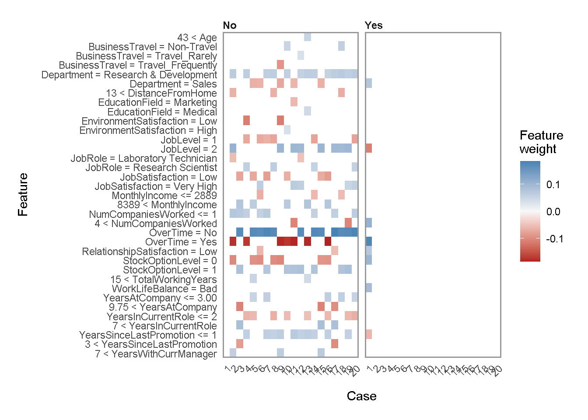
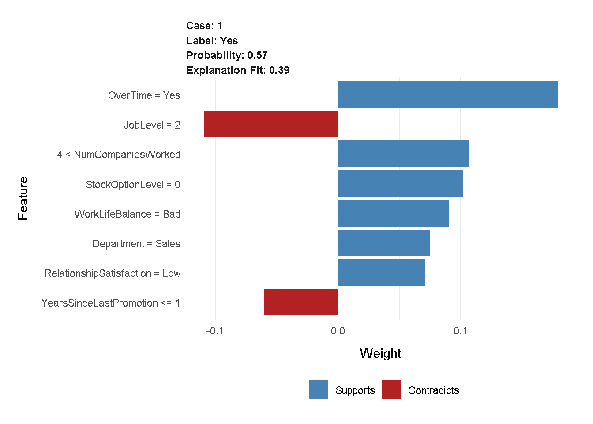
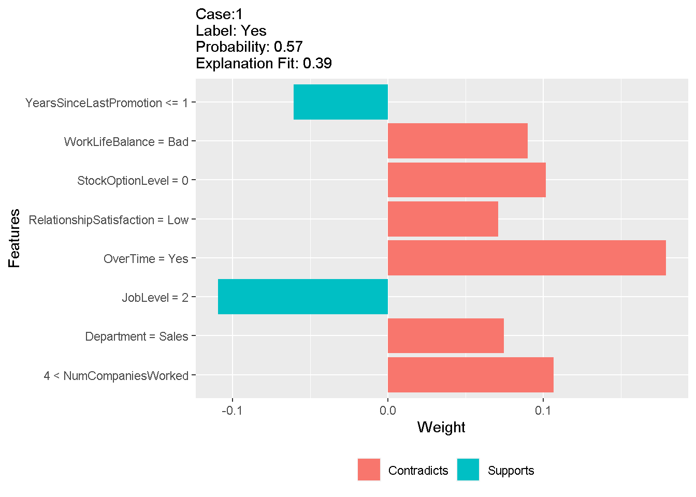
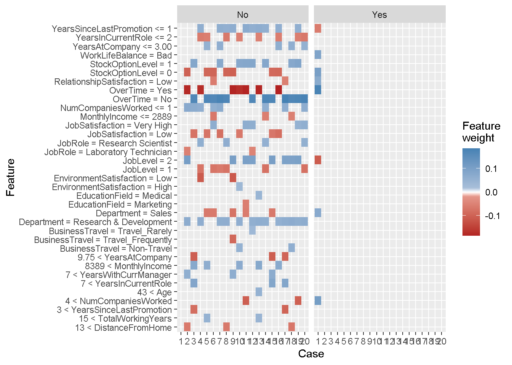

05 LIME
2020-25-05
Part 1: Recreate plot_features(). Take the explanation data and use the first case to create a plot similar to the output of plot_features(). Part 2: Recreate plot_explanations():
library(tidyverse)
library(readxl)
library(skimr)
library(GGally)
library(h2o)
library(rsample)
library(recipes)
library(cowplot)
library(glue)
library(tidyquant)
library(lime)
# Load Data
employee_attrition_tbl <- read_csv("raw_data/hratt.csv")
definitions_raw_tbl <- read_excel("raw_data/data_definitions.xlsx", sheet = 1, col_names = FALSE)
process_hr_data_readable <- function(data, definitions_tbl) {
definitions_list <- definitions_tbl %>%
fill(...1, .direction = "down") %>%
filter(!is.na(...2)) %>%
separate(...2, into = c("key", "value"), sep = " '", remove = TRUE) %>%
rename(column_name = ...1) %>%
mutate(key = as.numeric(key)) %>%
mutate(value = value %>% str_replace(pattern = "'", replacement = "")) %>%
split(.$column_name) %>%
map(~ select(., -column_name)) %>%
map(~ mutate(., value = as_factor(value)))
for (i in seq_along(definitions_list)) {
list_name <- names(definitions_list)[i]
colnames(definitions_list[[i]]) <- c(list_name, paste0(list_name, "_value"))
}
data_merged_tbl <- list(HR_Data = data) %>%
append(definitions_list, after = 1) %>%
reduce(left_join) %>%
select(-one_of(names(definitions_list))) %>%
set_names(str_replace_all(names(.), pattern = "_value",
replacement = "")) %>%
select(sort(names(.))) %>%
mutate_if(is.character, as.factor) %>%
mutate(
BusinessTravel = BusinessTravel %>% fct_relevel("Non-Travel",
"Travel_Rarely",
"Travel_Frequently"),
MaritalStatus = MaritalStatus %>% fct_relevel("Single",
"Married",
"Divorced")
)
return(data_merged_tbl)
}
employee_attrition_readable_tbl <- process_hr_data_readable(employee_attrition_tbl, definitions_raw_tbl)
# Split into test and train
set.seed(seed = 1113)
split_obj <- rsample::initial_split(employee_attrition_readable_tbl, prop = 0.85)
# Assign training and test data
train_readable_tbl <- training(split_obj)
test_readable_tbl <- testing(split_obj)
# ML Preprocessing Recipe
recipe_obj <- recipe(Attrition ~ ., data = train_readable_tbl) %>%
step_zv(all_predictors()) %>%
step_mutate_at(c("JobLevel", "StockOptionLevel"), fn = as.factor) %>%
prep()
train_tbl <- bake(recipe_obj, new_data = train_readable_tbl)
test_tbl <- bake(recipe_obj, new_data = test_readable_tbl)
# 2. Models ----
h2o.init()## Connection successful!
##
## R is connected to the H2O cluster:
## H2O cluster uptime: 28 minutes 59 seconds
## H2O cluster timezone: Europe/Berlin
## H2O data parsing timezone: UTC
## H2O cluster version: 3.32.1.2
## H2O cluster version age: 1 month and 5 days
## H2O cluster name: H2O_started_from_R_VikramSachdeva_wny421
## H2O cluster total nodes: 1
## H2O cluster total memory: 1.55 GB
## H2O cluster total cores: 4
## H2O cluster allowed cores: 4
## H2O cluster healthy: TRUE
## H2O Connection ip: localhost
## H2O Connection port: 54321
## H2O Connection proxy: NA
## H2O Internal Security: FALSE
## H2O API Extensions: Amazon S3, Algos, AutoML, Core V3, TargetEncoder, Core V4
## R Version: R version 4.0.3 (2020-10-10)split_h2o <- h2o.splitFrame(as.h2o(train_tbl), ratios = c(0.85), seed = 1234)##
|
| | 0%
|
|======================================================================| 100%train_h2o <- split_h2o[[1]]
valid_h2o <- split_h2o[[2]]
test_h2o <- as.h2o(test_tbl)##
|
| | 0%
|
|======================================================================| 100%# Set the target and predictors
y <- "Attrition"
x <- setdiff(names(train_h2o), y)
# automl_models_h2o <- h2o.automl(
# x = x,
# y = y,
# training_frame = train_h2o,
# validation_frame = valid_h2o,
# leaderboard_frame = test_h2o,
# max_runtime_secs = 120,
# nfolds = 5
# )
# h2o.getModel("StackedEnsemble_BestOfFamily_AutoML_20210524_114213") %>%
# h2o.saveModel(path = "04_Modeling/h20_models/")
automl_leader <- h2o.loadModel("04_Modeling/StackedEnsemble_BestOfFamily_AutoML_20210524_114213") #best
# 3. LIME ----
# 3.1 Making Predictions ----
predictions_tbl <- automl_leader %>%
h2o.predict(newdata = as.h2o(test_tbl)) %>%
as.tibble() %>%
bind_cols(
test_tbl %>%
select(Attrition, EmployeeNumber)
)##
|
| | 0%
|
|======================================================================| 100%
##
|
| | 0%
|
|======================================================================| 100%explainer <- train_tbl %>%
select(-Attrition) %>%
lime(
model = automl_leader,
bin_continuous = TRUE,
n_bins = 4,
quantile_bins = TRUE
)
explanation <- test_tbl %>%
dplyr::slice(1) %>%
select(-Attrition) %>%
lime::explain(
# Pass our explainer object
explainer = explainer,
# Because it is a binary classification model: 1
n_labels = 1,
# number of features to be returned
n_features = 8,
# number of localized linear models
n_permutations = 5000,
# Let's start with 1
kernel_width = 1
)##
|
| | 0%
|
|======================================================================| 100%
##
|
| | 0%
|
|======================================================================| 100%explanation %>%
as.tibble() %>%
select(feature:prediction) g <- plot_features(explanation = explanation, ncol = 1)
# 3.3 Multiple Explanations ----
explanation <- test_tbl %>%
dplyr::slice(1:20) %>%
select(-Attrition) %>%
lime::explain(
explainer = explainer,
n_labels = 1,
n_features = 8,
n_permutations = 5000,
kernel_width = 0.5
)##
|
| | 0%
|
|======================================================================| 100%
##
|
| | 0%
|
|======================================================================| 100%explanation %>%
as.tibble()plot_features(explanation[1:8,],ncol = 4)
plot_explanations(explanation)
## Challenge
explanation %>%
as.tibble()case_1 <- explanation %>%
filter(case == 1)
case_1 %>%
plot_features()
# make V1 an ordered factor
prob <- format(explanation$label_prob[1], digits = 2)
exp <- format(explanation$model_r2[1], digits = 2)
ggplot(case_1, aes(x=feature_desc, y=feature_weight, fill = ifelse(feature_weight<0, 'firebrick', 'dodgerblue3'))) +
geom_bar(stat="identity") +
labs(
subtitle = sprintf("Case:1 \nLabel: Yes\nProbability: %s \nExplanation Fit: %s",prob,exp),
x="Features",
y="Weight",
fill =""
) +
theme(legend.position = "bottom") +
scale_fill_hue(labels = c("Contradicts", "Supports")) + coord_flip()
#plot explanations
cases_order <- factor(explanation$case,levels = as.character(sort(unique(as.numeric(explanation$case)))))
ggplot(explanation, aes(x=cases_order, y=feature_desc, fill= feature_weight)) +
scale_x_discrete(drop = FALSE) +
labs(
x="Case",
y="Feature",
fill ="Feature\nweight"
) +
geom_tile() +
facet_wrap(~ label) +
scale_fill_gradientn(colours = c("firebrick", "white", "steelblue"),
values = scales::rescale(c(-0.5, -0.05, 0, 0.05, 0.5)))